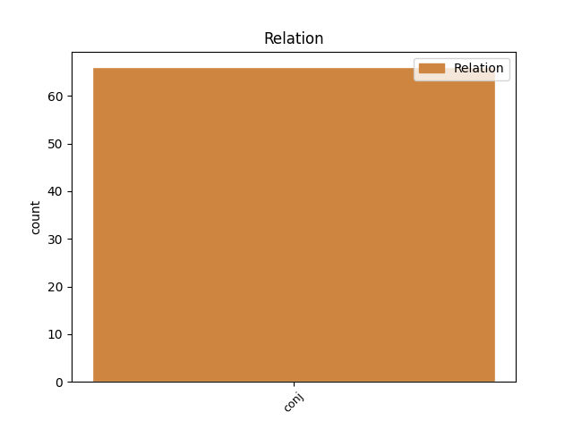
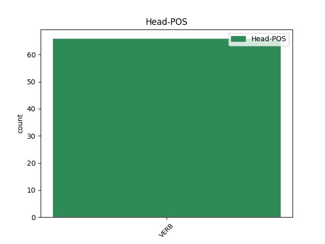
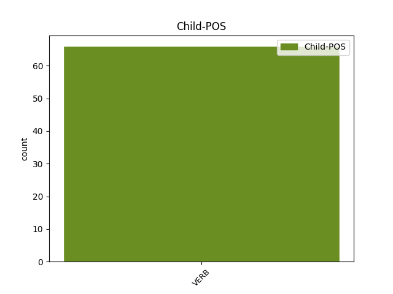

Distribution of features within this leaf



Agreement Rules sorted by frequency.
- When the dependent token is the conjunct(conj) of the head token, and the head token is VERB and the dependent token is VERB.
1 Ён _ _ _ _ 0 _ _ _
2 прыставаў _ _ _ _ 0 _ _ _
3 да _ _ _ _ 0 _ _ _
4 свайго _ _ _ _ 0 _ _ _
5 даўганогага _ _ _ _ 0 _ _ _
6 дзядзькі _ _ _ _ 0 _ _ _
7 Жырафа _ _ _ _ 0 _ _ _
8 і _ _ _ _ 0 _ _ _
9 пытаўся пытацца VERB VBC Aspect=Imp|Gender=Masc|Mood=Ind|Number=Sing|Tense=Past|VerbForm=Fin|Voice=Mid 0 _ _ _
10 , _ _ _ _ 0 _ _ _
11 чаму _ _ _ _ 0 _ _ _
12 ў _ _ _ _ 0 _ _ _
13 яго _ _ _ _ 0 _ _ _
14 на _ _ _ _ 0 _ _ _
15 скуры _ _ _ _ 0 _ _ _
16 плямы _ _ _ _ 0 _ _ _
17 , _ _ _ _ 0 _ _ _
18 і _ _ _ _ 0 _ _ _
19 высачэзны _ _ _ _ 0 _ _ _
20 дзядзька _ _ _ _ 0 _ _ _
21 Жыраф _ _ _ _ 0 _ _ _
22 даваў даваць VERB VBC Aspect=Imp|Gender=Masc|Mood=Ind|Number=Sing|Tense=Past|VerbForm=Fin|Voice=Act 9 conj _ _
23 яму _ _ _ _ 0 _ _ _
24 за _ _ _ _ 0 _ _ _
25 гэта _ _ _ _ 0 _ _ _
26 грымака _ _ _ _ 0 _ _ _
27 сваім _ _ _ _ 0 _ _ _
28 цвёрдым _ _ _ _ 0 _ _ _
29 , _ _ _ _ 0 _ _ _
30 як _ _ _ _ 0 _ _ _
31 камень _ _ _ _ 0 _ _ _
32 , _ _ _ _ 0 _ _ _
33 капытом _ _ _ _ 0 _ _ _
34 . _ _ _ _ 0 _ _ _
Disagree Examples:
1 Я _ _ _ _ 0 _ _ _
2 ведаю ведаць VERB VBC Aspect=Imp|Mood=Ind|Number=Sing|Person=1|Tense=Pres|VerbForm=Fin|Voice=Act 0 _ _ _
3 прынамсі _ _ _ _ 0 _ _ _
4 трох _ _ _ _ 0 _ _ _
5 чалавекаў _ _ _ _ 0 _ _ _
6 , _ _ _ _ 0 _ _ _
7 якіх _ _ _ _ 0 _ _ _
8 мне _ _ _ _ 0 _ _ _
9 атрымалася _ _ _ _ 0 _ _ _
10 натхніць _ _ _ _ 0 _ _ _
11 , _ _ _ _ 0 _ _ _
12 і _ _ _ _ 0 _ _ _
13 яны _ _ _ _ 0 _ _ _
14 сапраўды _ _ _ _ 0 _ _ _
15 пачалі пачаць VERB VBC Aspect=Perf|Mood=Ind|Number=Plur|Tense=Past|VerbForm=Fin|Voice=Act 2 conj _ _
16 карыстацца _ _ _ _ 0 _ _ _
17 беларускай _ _ _ _ 0 _ _ _
18 . _ _ _ _ 0 _ _ _
1 Калі _ _ _ _ 0 _ _ _
2 зменіцца зменіцца VERB VBC Aspect=Perf|Mood=Ind|Number=Sing|Person=3|Tense=Fut|VerbForm=Fin|Voice=Mid 0 _ _ _
3 сітуацыя _ _ _ _ 0 _ _ _
4 ў _ _ _ _ 0 _ _ _
5 краіне _ _ _ _ 0 _ _ _
6 , _ _ _ _ 0 _ _ _
7 і _ _ _ _ 0 _ _ _
8 гэта _ _ _ _ 0 _ _ _
9 можа магчы VERB VBC Aspect=Imp|Mood=Ind|Number=Sing|Person=3|Tense=Pres|VerbForm=Fin|Voice=Act 2 conj _ _
10 здарыцца _ _ _ _ 0 _ _ _
11 ўжо _ _ _ _ 0 _ _ _
12 заўтра _ _ _ _ 0 _ _ _
13 ... _ _ _ _ 0 _ _ _
14 , _ _ _ _ 0 _ _ _
15 беларуская _ _ _ _ 0 _ _ _
16 мова _ _ _ _ 0 _ _ _
17 зноў _ _ _ _ 0 _ _ _
18 атрымае _ _ _ _ 0 _ _ _
19 свой _ _ _ _ 0 _ _ _
20 гонар _ _ _ _ 0 _ _ _
21 і _ _ _ _ 0 _ _ _
22 ты _ _ _ _ 0 _ _ _
23 будзеш _ _ _ _ 0 _ _ _
24 шкадаваць _ _ _ _ 0 _ _ _
25 , _ _ _ _ 0 _ _ _
26 што _ _ _ _ 0 _ _ _
27 яе _ _ _ _ 0 _ _ _
28 не _ _ _ _ 0 _ _ _
29 ведаеш _ _ _ _ 0 _ _ _
30 добра _ _ _ _ 0 _ _ _
31 . _ _ _ _ 0 _ _ _
1 Менавіта _ _ _ _ 0 _ _ _
2 дакладнае _ _ _ _ 0 _ _ _
3 земляробства _ _ _ _ 0 _ _ _
4 можа магчы VERB _ Aspect=Imp|Mood=Ind|Number=Sing|Person=3|Tense=Pres|VerbForm=Fin|Voice=Act 0 _ _ _
5 дазволіць _ _ _ _ 0 _ _ _
6 скараціць _ _ _ _ 0 _ _ _
7 спажыванне _ _ _ _ 0 _ _ _
8 паліва _ _ _ _ 0 _ _ _
9 на _ _ _ _ 0 _ _ _
10 40 _ _ _ _ 0 _ _ _
11 працэнтаў _ _ _ _ 0 _ _ _
12 , _ _ _ _ 0 _ _ _
13 гэтак _ _ _ _ 0 _ _ _
14 жа _ _ _ _ 0 _ _ _
15 зменшацца зменшыцца VERB _ Aspect=Perf|Mood=Ind|Number=Plur|Person=3|Tense=Fut|VerbForm=Fin|Voice=Mid 4 conj _ _
16 расходы _ _ _ _ 0 _ _ _
17 ўгнаенняў _ _ _ _ 0 _ _ _
18 , _ _ _ _ 0 _ _ _
19 пестыцыдаў _ _ _ _ 0 _ _ _
20 і _ _ _ _ 0 _ _ _
21 іншых _ _ _ _ 0 _ _ _
22 сродкаў _ _ _ _ 0 _ _ _
23 , _ _ _ _ 0 _ _ _
24 паведаміў _ _ _ _ 0 _ _ _
25 намеснік _ _ _ _ 0 _ _ _
26 генеральнага _ _ _ _ 0 _ _ _
27 дырэктара _ _ _ _ 0 _ _ _
28 па _ _ _ _ 0 _ _ _
29 навуковай _ _ _ _ 0 _ _ _
30 рабоце _ _ _ _ 0 _ _ _
31 і _ _ _ _ 0 _ _ _
32 вытворчасці _ _ _ _ 0 _ _ _
33 Навукова-вытворчага _ _ _ _ 0 _ _ _
34 цэнтра _ _ _ _ 0 _ _ _
35 НАН _ _ _ _ 0 _ _ _
36 Беларусі _ _ _ _ 0 _ _ _
37 па _ _ _ _ 0 _ _ _
38 земляробстве _ _ _ _ 0 _ _ _
39 Дзмітрый _ _ _ _ 0 _ _ _
40 ЛУЖЫНСКІ _ _ _ _ 0 _ _ _
41 . _ _ _ _ 0 _ _ _
1 — _ _ _ _ 0 _ _ _
2 Сёння _ _ _ _ 0 _ _ _
3 пра _ _ _ _ 0 _ _ _
4 перамогу _ _ _ _ 0 _ _ _
5 не _ _ _ _ 0 _ _ _
6 думаю думаць VERB _ Aspect=Imp|Mood=Ind|Number=Sing|Person=1|Tense=Pres|VerbForm=Fin|Voice=Act 0 _ _ _
7 , _ _ _ _ 0 _ _ _
8 я _ _ _ _ 0 _ _ _
9 ўжо _ _ _ _ 0 _ _ _
10 дасягнула дасягнуць VERB _ Aspect=Perf|Gender=Fem|Mood=Ind|Number=Sing|Tense=Past|VerbForm=Fin|Voice=Act 6 conj _ _
11 ўсяго _ _ _ _ 0 _ _ _
12 , _ _ _ _ 0 _ _ _
13 чаго _ _ _ _ 0 _ _ _
14 хацела _ _ _ _ 0 _ _ _
15 . _ _ _ _ 0 _ _ _
1 Публіку _ _ _ _ 0 _ _ _
2 збіраюся _ _ _ _ 0 _ _ _
3 здзіўляць _ _ _ _ 0 _ _ _
4 сваёй _ _ _ _ 0 _ _ _
5 харызмай _ _ _ _ 0 _ _ _
6 і _ _ _ _ 0 _ _ _
7 творчым _ _ _ _ 0 _ _ _
8 нумарам _ _ _ _ 0 _ _ _
9 — _ _ _ _ 0 _ _ _
10 займаюся займацца VERB _ Aspect=Imp|Mood=Ind|Number=Sing|Person=1|Tense=Pres|VerbForm=Fin|Voice=Mid 0 _ _ _
11 эстраднай _ _ _ _ 0 _ _ _
12 харэаграфіяй _ _ _ _ 0 _ _ _
13 , _ _ _ _ 0 _ _ _
14 таму _ _ _ _ 0 _ _ _
15 сёння _ _ _ _ 0 _ _ _
16 прадэманструю прадэманстраваць VERB _ Aspect=Perf|Mood=Ind|Number=Sing|Person=1|Tense=Fut|VerbForm=Fin|Voice=Act 10 conj _ _
17 гледачам _ _ _ _ 0 _ _ _
18 лацінаамерыканскі _ _ _ _ 0 _ _ _
19 танец _ _ _ _ 0 _ _ _
20 . _ _ _ _ 0 _ _ _